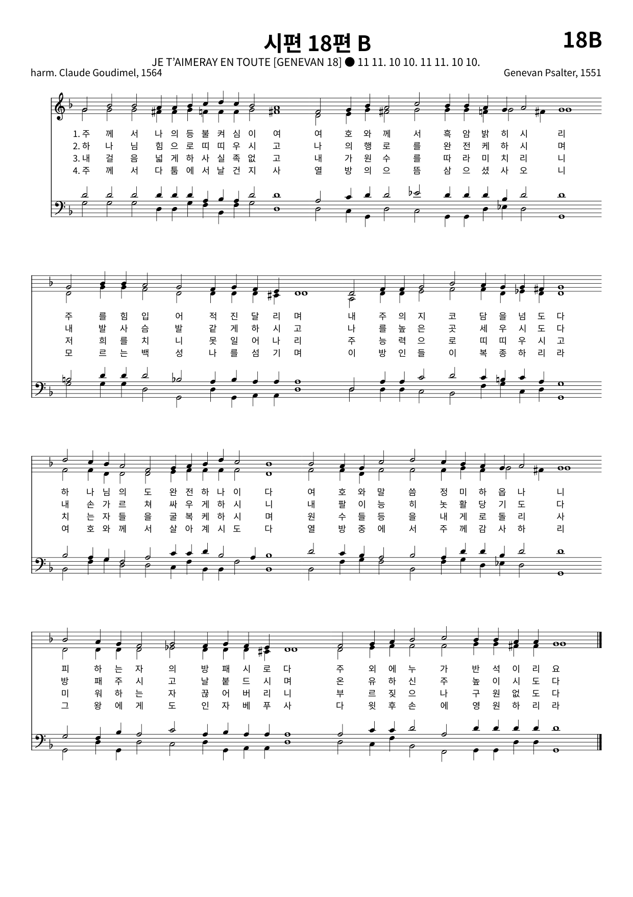

Psalm 18B
JE T’AIMERAY EN TOUTE [GENEVAN 18] · 11 11. 10 10. 11 11. 10 10.
English title: Thee, LORD, I Love; Thou Art My Shield
Tune: Genevan Psalter, 1551 · Harmony: Claude Goudimel, 1564 · Lyrics: Korean adaptation of Psalm 18 from the Korean Revised Version (AI draft adaptation · not yet theologically reviewed) · 4 stanzas
Psalm 18 is divided into 2 tunes: A B · This tune contains stanzas 8–11 of the Psalm 18 lyrics.
Score PDF MusicXML (for printing) MusicXML (for accompaniment, with prelude and repeats) Read Psalm 18 (Korean Revised Version)
Score
← Psalm 18A ListAccompaniment (in preparation)Psalm 19 →
Lyrics (Korean)
Stanza 1
주께서 나의 등불 켜심이여
여호와께서 흑암 밝히시리
주를 힘입어 적진 달리며
내 주 의지코 담을 넘도다
하나님의 도 완전하나이다
여호와 말씀 정미하옵나니
피하는 자의 방패시로다
주 외에 누가 반석이리요
주께서 나의 등불 켜심이여
여호와께서 흑암 밝히시리
주를 힘입어 적진 달리며
내 주 의지코 담을 넘도다
하나님의 도 완전하나이다
여호와 말씀 정미하옵나니
피하는 자의 방패시로다
주 외에 누가 반석이리요
Stanza 2
하나님 힘으로 띠 띠우시고
나의 행로를 완전케 하시며
내 발 사슴 발 같게 하시고
나를 높은 곳 세우시도다
내 손 가르쳐 싸우게 하시니
내 팔이 능히 놋 활 당기도다
방패 주시고 날 붙드시며
온유하신 주 높이시도다
하나님 힘으로 띠 띠우시고
나의 행로를 완전케 하시며
내 발 사슴 발 같게 하시고
나를 높은 곳 세우시도다
내 손 가르쳐 싸우게 하시니
내 팔이 능히 놋 활 당기도다
방패 주시고 날 붙드시며
온유하신 주 높이시도다
Stanza 3
내 걸음 넓게 하사 실족 없고
내가 원수를 따라 미치리니
저희를 치니 못 일어나리
주 능력으로 띠 띠우시고
치는 자들을 굴복케 하시며
원수들 등을 내게로 돌리사
미워하는 자 끊어버리니
부르짖으나 구원 없도다
내 걸음 넓게 하사 실족 없고
내가 원수를 따라 미치리니
저희를 치니 못 일어나리
주 능력으로 띠 띠우시고
치는 자들을 굴복케 하시며
원수들 등을 내게로 돌리사
미워하는 자 끊어버리니
부르짖으나 구원 없도다
Stanza 4
주께서 다툼에서 날 건지사
열방의 으뜸 삼으셨사오니
모르는 백성 나를 섬기며
이방인들이 복종하리라
여호와께서 살아 계시도다
열방 중에서 주께 감사하리
그 왕에게도 인자 베푸사
다윗 후손에 영원하리라
주께서 다툼에서 날 건지사
열방의 으뜸 삼으셨사오니
모르는 백성 나를 섬기며
이방인들이 복종하리라
여호와께서 살아 계시도다
열방 중에서 주께 감사하리
그 왕에게도 인자 베푸사
다윗 후손에 영원하리라